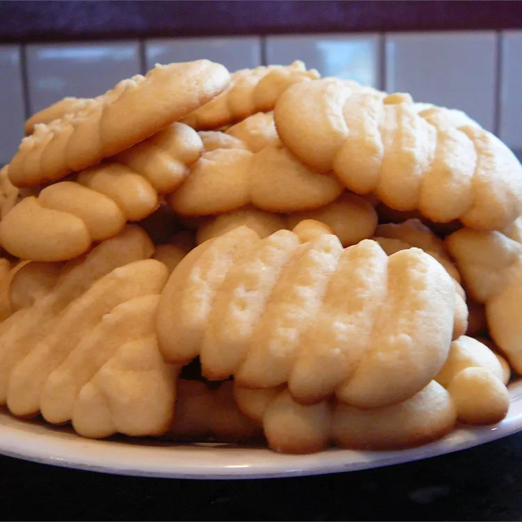

Hello to my website
Lets start baking

Ingredients
- 2 2/3 cups (320 g.) all-purpose flour
- 1 tsp. baking soda
- 1 tsp. kosher salt
- 1 1/4 cups (2 1/2 sticks) unsalted butter, melted
- 3/4 cup (150 g.) packed light brown sugar
- 1/2 cup (100 g.) granulated sugar
- 2 large eggs
- 1 tsp. pure vanilla extract
- 1 cup (170 g.) semisweet chocolate chips
- 1 cup (120 g.) coarsely chopped chocolate wafers or discs (or from a bar), preferably 70% cacao or higher
Directions
- Step 1
In a medium bowl, whisk flour, baking soda, and salt until combined.
- Step 2
In a large bowl, whisk butter, brown sugar, and granulated sugar until combined and creamy. Add eggs and vanilla and whisk to combine. Add dry ingredients and stir with a rubber spatula until about halfway mixed in. Add chips and wafers and fold until just combined. Cover bowl with plastic wrap and refrigerate at least 4 hours and up to 24.
- Step 3
Let dough come to room temperature. Arrange racks in upper and lower thirds of oven; preheat to 350°. Using a large cookie scoop (about 3 Tbsp.), scoop dough onto 2-parchment lined baking sheets, spacing about 3" apart.
- Step 4
Bake cookies, rotating trays to top bottom halfway through, until edges are golden brown and just set and centers are almost set, 12 to 14 minutes. Transfer to a wire rack and let cool slightly.

Butter Cookies